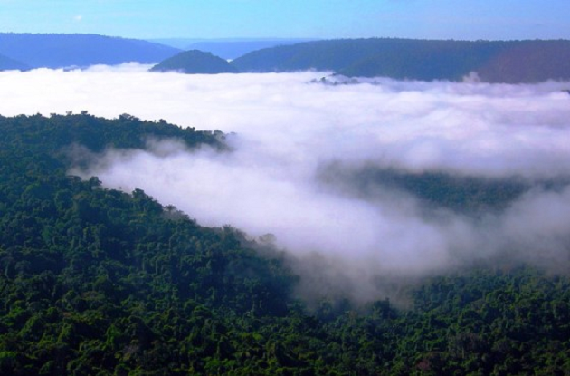
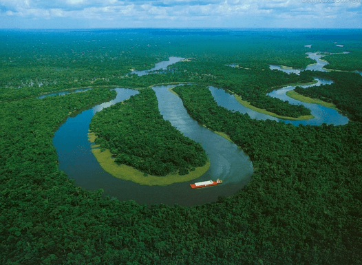
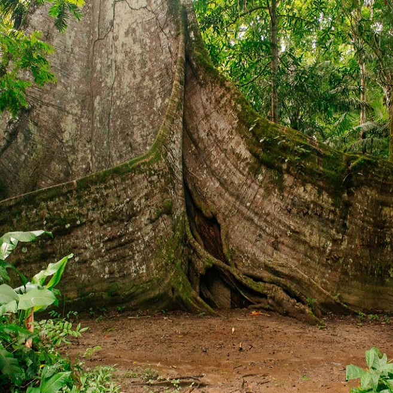

Clima
O clima da Amazônia é equatorial, caracterizado por elevadas temperaturas e grande índice pluviométrico. As temperaturas médias anuais variam entre 22 e 28 °C, a umidade do ar pode ultrapassar os 80% e o índice pluviométrico varia entre 1400 a 3500 mm por ano.
Relevo
O relevo amazônico é formado por planície de inundação (várzeas), planalto amazônico e escudos cristalinos. Geralmente, não apresenta altitudes acima de 200 metros. Contudo, o Pico da Neblina, considerado o ponto mais alto do Brasil, localiza-se no norte do estado do Amazonas, com altitude de 3014 metros.
Hidrográfia
A bacia amazônica é a maior bacia hidrográfica do mundo e seu principal rio, o Amazonas, é o maior rio do mundo em volume de água com mais de 7 mil afluentes. Outros rios que fazem parte da hidrografia da Amazônia são: Araguaia, Nhamundá, Negro, Solimões, Tocantins, Trombetas, Xingu, Purus, Juruá, Japurá, Madeira, Tapajós e Branco.

Fauna
A floresta amazônica abriga inúmeras espécies de animais, dos quais destacamos: anta, preguiça, sagui-de-bigode, ariranha, suçuarana, arara-vermelha, tucano, morcego, tamanduá, cateto, cachorro-vinagre, gato-maracajá, macaco-aranha, macaco-barrigudo, irara, jaguatirica, jaguarundi, jacaré-açu, onça-pintada, peixe-boi, enguias, piranha, pirarucu, sucuri, bugio e boto cor-de-rosa.
Flora
A vegetação da Amazônia é densa e formada por árvores de grande porte. Algumas das árvores nativas da Amazônia são: andiroba, pupunha, açaí, seringueira, mogno, cedro, sumaúma e castanheira-do-pará.
